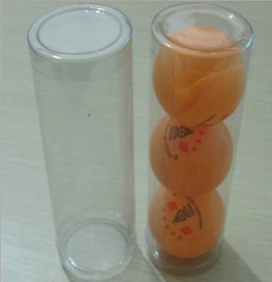
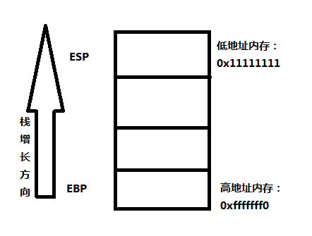
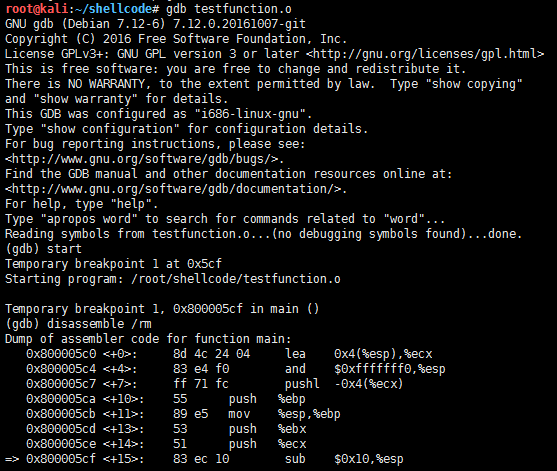
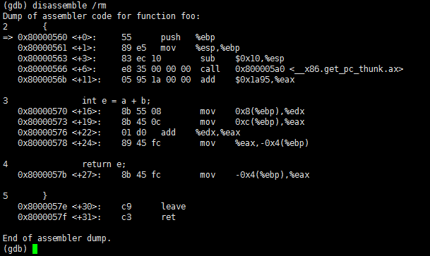
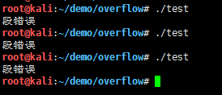
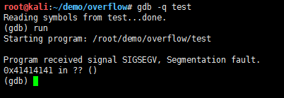
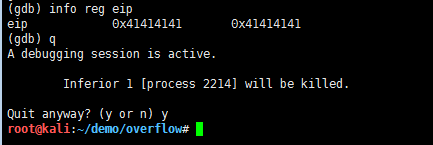

本文的目的不是为了介绍如何进行恶意的破坏性活动，而是为了教会你如何去防御此类破坏性活动，以帮助你扩大知识范围，完善自己的技能，如有读者运用本文所学技术从事破坏性活动，本人概不负责。
1988年，世界上第一个缓冲区溢出攻击--Morris蠕虫在互联网上泛滥，短短一夜的时间全世界6000多台网络服务器瘫痪或半瘫痪，不计其数的数据和资料被毁。造成一场损失近亿美元的空前大劫难！
缓冲区溢出是一种非常普遍、非常危险的漏洞，在各种操作系统、应用软件中广泛存在。利用缓冲区溢出攻击，可以导致程序运行失败、系统宕机、重新启动等后果。更为严重的是，可以利用它执行非授权指令，甚至可以取得系统特权，进而进行各种非法操作。
在学习这篇教程之前，你需要准备以下东西：
1、一台拥有Linux虚拟机的计算机或者拥有Linux操作系统的物理机。
2、GCC编译器。
3、GDB调试器。
4、任意一款文本编辑器（如vim）。
除此之外，我们还需要了解一些基础知识。
对于栈这个概念的最好诠释就是将其想象为一个装乒乓球的圆筒。
从上面口子往下一次放一个进去，先放进去的后面才能出来。栈也同样如此，不过这个圆筒是装乒乓球的，而栈是存储数据的。从计算机术语中来说，栈是一种具有先进后出队列特性的数据结构。
1、入栈或压栈，它在汇编语言中是通过push指令完成的。
2、从栈上取出元素的过程被称为出栈，它在汇编语言中是通过pop指令完成的。
在内存中，每个进程在其内存堆栈段中都拥有自己的栈，针对栈的处理我们需要了解两个寄存器EBP（扩展基址指针寄存器）和ESP（栈指针寄存器）的概念。
EBP指向当前栈的底部，而ESP总是指向栈顶。（如上图）
函数其实就是一个可供其他函数调用的自包含的代码模块，这句话听起来很绕口，但理解起来很简单，这种函数调用其实就是导致程序流程的跳转，当我们在汇编程序中调用一个函数时，将会发生以下三个步骤：
1、按照调用约定，首先需要将函数参数按照逆序入栈，从而对函数调用进行设置。
2、将EIP保存到栈上（EIP是指令寄存器，存放当前指令的下一条指令的地址），这样程序在调用函数返回后能够在之前中断的地方继续执行下去，所以EIP存放的地址被称为返回地址。
3、执行call命令，将该函数地址放入EIP寄存器进行执行。
下面我们就以一个例子来了解函数调用过程。
示例C程序（function.c）：
int foo(int a, int b)
{
int e = a + b;
return e;
}
int main(void)
{
foo(5, 2);
return 0;
}
首先我们进行编译
gcc -g function.c -o testfunction.o
-g选项使目标文件testfunction.o包含程序的调试信息。
很简单的一个程序，我们主要用它来了解一下函数调用过程。
我们使用gdb来调试程序：
start命令用于拉起被调试程序，并执行至main函数的开始位置。disassemble命令的/m指示显示汇编指令的同时，显示相应的程序源码。
我们先来看看调用foo()函数这段汇编代码：
0x80000580 <+0>: 55 push %ebp
0x80000581 <+1>: 89 e5 mov %esp,%ebp
0x80000583 <+3>: e8 18 00 00 00 call 0x800005a0 <__x86.get_pc_thunk.ax>
0x80000588 <+8>: 05 78 1a 00 00 add $0x1a78,%eax
0x8000058d <+13>: 6a 02 push $0x2
0x8000058f <+15>: 6a 05 push $0x5
0x80000591 <+17>: e8 ca ff ff ff call 0x80000560 <foo>
和前面我们所说的流程一样，首先将调用程序的EBP寄存器入栈。然后将当前ESP寄存器保存到EBP寄存器。之后获取要返回的地址。接下来就是将函数参数按照逆序入栈，最后执行call命令。
现在我们已经了解是如何进入函数的，接下来我们继续了解函数又是如何结束的呢。
foo函数被执行之后，我们使用disassemble命令显示其汇编指令：
函数收场白：
0x8000057e <+30>: c9 leave
0x8000057f <+31>: c3 ret
被调函数在返回调用程序之前所要做的事情就是将栈清空，而有效的清空栈就是leave语句功能的一部分。然后就是从栈中弹出所保存的EIP返回调用程序。
缓冲区是指一块可用于接受和存放数据的存储区域，缓冲区一旦分配，其大小也就固定了。首先我们来看一段c程序：
#include <string.h>
int main(){
char test[10];
strcpy(test,"AAAAAAAAAAAAAAAAAAAAAAAAAA");
}
这段代码非常简单，首先我们定义了一个10字节的字符串，然后使用strcpy函数复制了26个字节的A到test。这明显会发生问题，但是我们先不用管它，我们首先来编译运行一下这个程序：
gcc编译：gcc -ggdb -mpreferred-stack-boundary=2 -fno-stack-protector -o test test.c
运行结果：
可以发现出现了段错误提示，不用郁闷，这正是我们想要的，下面我们使用gdb调试器看看哪里出错了。
我们可以发现，程序试图执行0x41414141处的指令时程序崩溃，而0x41414141刚好是AAAA的十六进制编码。接下来，我们检查一下寄存器EIP：
检查完EIP我们可以清楚的发现问题所在了，从前面的基础知识我们了解到EIP存放的地址被称为返回地址，程序在调用函数返回后能够在之前中断的地方继续执行下去靠的就是EIP，现在EIP被这些A破坏了，程序肯定要崩溃，这就是经典的缓冲区溢出原理。
本篇文章我们了解了栈的基本概念，函数调用过程以及缓冲区溢出的基本原理，但是这并没有结束，我们还没有去利用这个缓冲区溢出漏洞，下一篇文章我将给大家展示实际情况下缓冲区溢出漏洞出现的位置，以及如何去利用它获取一个Shell。
1、百度百科
2、Buffer Overflow Tutorial： https://gist.github.com/apolloclark/6cffb33f179cc9162d0a
3、Buffer Overflow Exploit： https://dhavalkapil.com/blogs/Buffer-Overflow-Exploit/
4、维基百科： https://en.wikipedia.org/wiki/Buffer_overflow
5、基于堆栈的缓冲区溢出开发教程： https://www.exploit-db.com/docs/28475.pdf
6、函数调用过程探究： http://www.cnblogs.com/bangerlee/archive/2012/05/22/2508772.html